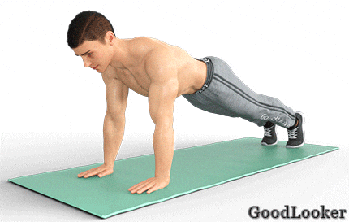

1. Приседание с жимом гантелей вверх
Сколько выполнять: 12-15 повторений.
2. Попеременная тяга гантелей в наклоне
Сколько выполнять: 8-10 подтягиваний на каждую руку (всего 16-20 подтягиваний).
3. Отжимания с подтягиванием рук
Сколько выполнять: 14-16 отжиманий.
4. Супермен
Сколько выполнять: 12-15 повторений.
5. Подъемы ног с касанием рукой
Сколько выполнять: 8-10 касаний на каждую сторону (всего 16-20 касаний).

6. Румынская тяга с приседом
Сколько выполнять: 10-12 повторений.
7. Выпады на месте с гантелями
Сколько выполнять: 12-15 выпадов сначала на одну ногу потом на другую.
8. Жим гантелей нейтральным хватом + разводка
Сколько выполнять: 10-12 повторений.
9. Из планки на локтях в планку на руках
Сколько выполнять: 8-10 повторений на каждую руку (всего 16-20 подъемов).

10. Колени к груди полусидя
Сколько выполнять: 13-15 повторений.